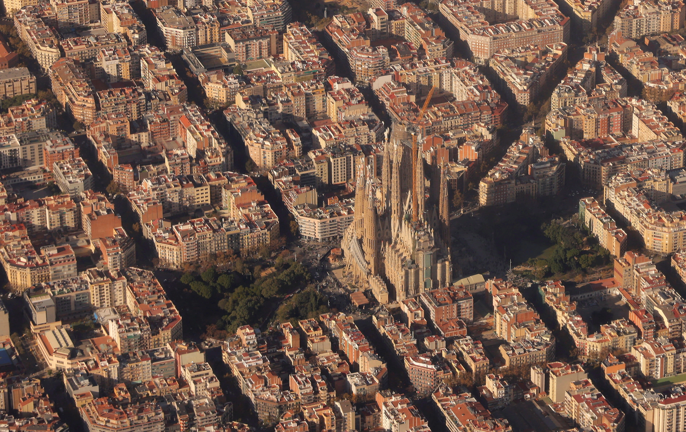
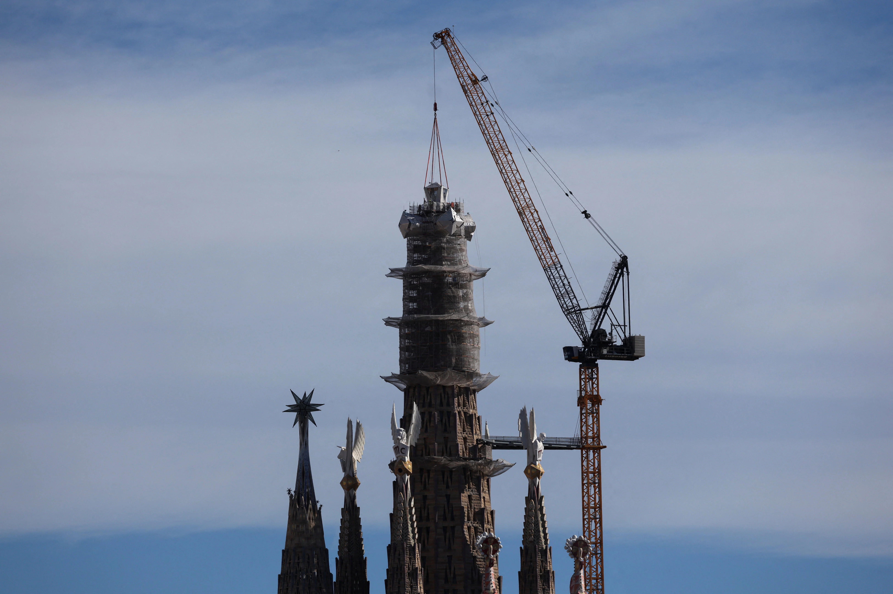
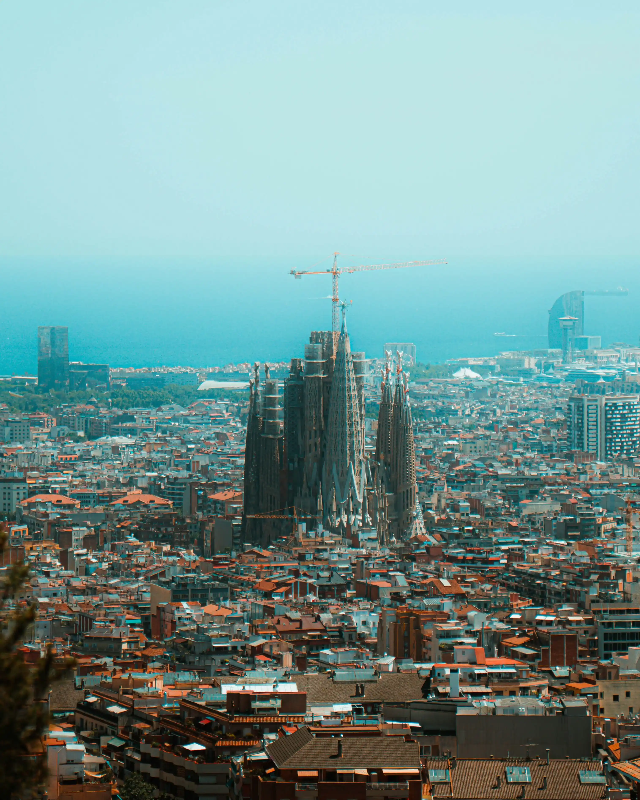

TVBS新聞網
TVBS新聞網
TVBS新聞網
TVBS新聞網

2026年6月10日，教宗良十四世將踏上巴塞隆納聖家堂的廣場。那一天，是高第逝世整整100年，也是這座被他稱為「獻給上帝的最後禮物」的教堂，首座主塔正式揭幕的日子。從1882年破土到172.5公尺登頂，耗時144年、經歷無數爭議——TVBS新聞網帶您見證這場跨越三個世紀的建築奇蹟，直擊聖家堂百年登頂的歷史時刻。

2025年4月，教宗方濟加速宣告高第為「可敬者」，封聖進程正式啟動。百年祭日與聖家堂主塔揭幕同一天，封聖期待再度升溫。
「高第要被尊為聖人，必須要有兩個神蹟歸功於他，並得到梵蒂岡的嚴格認證⋯⋯即便早已被世人視為聖人，要經過真正的封聖，需要非常高的門檻。」
聖家堂18座塔中的最高塔，高度恰低於巴塞隆納蒙特惠奇山。這是高第刻意的謙卑設計：人造建築，不應超越上帝的創造。
聖家堂登頂是歷史里程碑，但「登頂不等於完工」。主體結構預計2026年落成，但繁複的雕塑裝飾與爭議重重的「榮耀立面」階梯工程，預計延伸至2034年——而這段階梯，可能讓數百戶住民流離失所。
居民們掛出紅色抗議標語「我們的房子是合法的！」，與後方壯麗的尖塔形成諷刺對比。部分評論家也質疑，階梯計畫並非出自高第原始設計，而是教會為容納每年近500萬遊客的商業擴張⋯⋯
閱讀完整報導
起初靠信徒捐獻建造的贖罪教堂，如今已是巴塞隆納最具代表性的觀光地標，每年門票與周邊收入支撐工程持續推進。

聖家堂在2026年主塔落成後，預計將迎來新一波觀光熱潮。然而，宗教空間的商業化、世界遺產維護成本，以及過度觀光對城市居民生活的衝擊，也是巴塞隆納市政府正面對的難題⋯⋯
2026年高第逝世百年，巴塞隆納以完整的高第作品群為主軸，推出系列展覽與觀光路線，邀請全球旅人重新認識這位建築天才。
6月大典前後人潮爆滿，安檢加強。由巴塞隆納官方中文導遊王儷瑾解說，整理票務、時間、穿著三大必知事項。

更多細節：導覽語音、官方App使用、聖保羅醫院與米拉之家周邊行程建議
閱讀完整攻略報導